2004

八达岭长城

居庸关长城

八达岭长城

八达岭长城

八达岭长城

古建筑前
2006

青秀山桃花

青秀山赏花

青秀山合影

青秀山合影

青秀山合影

青秀山合影

青秀山春游

青秀山合影

青秀山合影

青秀山花下

青秀山杜鹃

青秀山合影

青秀山全家福

青秀山合影

青秀山门楼

龙象塔前

青秀山大门

青秀山大门
2007

戈尔韦

戈尔韦海边

戈尔韦

戈尔韦

戈尔韦海边

戈尔韦

戈尔韦

戈尔韦

戈尔韦

戈尔韦

戈尔韦

戈尔韦

戈尔韦

戈尔韦广场

戈尔韦商业街

戈尔韦

戈尔韦

戈尔韦

戈尔韦

戈尔韦街头

天鹅湖畔

天鹅群中

戈尔韦

戈尔韦

戈尔韦

戈尔韦教堂

教堂苦像前

圣母像前

祭坛前

教堂内

花窗前

教堂前

教堂前

桥上

草地上

公园里

公园里

公园里

街头

街头

古迹前

聚餐

餐厅聚餐

餐厅聚餐

中秋夜

中秋夜

中秋夜

家中
2009

夜晚玩耍

室内合影

家中日常

山上祭祖

祭祖小憩

户外合影

山坡合影

车站候车

候车时光

游船小憩

船舱抱睡

船上同行

船舱休息
2010

家中团聚

全家合影

家中照看

节日游行

游行途中

抱着二东

家中合影

城堡前留影

路边留影

车上抱娃

公园嬉戏

古城堡前

城堡前全家福

湖畔古堡留念

城堡门前推车

国家公园门口

湖畔祖孙

湖畔抱孙

湖畔木栅留念

湖光山色间

湖畔祖孙远眺

绿荫含笑

茅草屋前守候

喷泉池畔

滑梯旁的欢笑

石阶漫步

脸贴脸

山顶全家福

山野桥上合影

高处揽胜

山坡抱娃

溪谷木栏留影

山顶远眺

抱娃观湖

床边嬉闹

湖畔迎风

陪孙玩耍

红衣小寿星

家中团聚

出行路上

楼下逗娃

操场联欢

操场合影
2011

饭店聚餐

球池玩耍

游乐场玩车

公园野餐

家中合影
2012

百色田阳

油田合影

纪念碑前

台阶合影

长台阶合影

牌坊前

家中

公园

集市

草坪野餐

草坪野餐

大运体育场

农家乐

肯德基

家中自拍

花束合影

亲密合影

指看日历

看日历

沙发合影

花丛中

花海合影

游乐园里

游乐园里

花前

马车上

花田中

花田前

游乐园里

机器人旁

机器人旁

水上乐园

摩天轮前

台阶上

石象旁

全家福

阳台上

阳台上

家中

林荫道

公园里

公园里

石像前

石像前

公园里

公园游玩

刻字石旁

登台阶

公园漫步

公园游玩

石狮旁

家中

家中

大运场馆

大运场馆

圣诞树前
2013

公园野餐

野餐时光

造型板后

扮新郎

姐妹合影

姐妹同游

贝壳喷泉

喷泉旁

冬日公园

公园里

广场留影

姐妹合影

广场合影

同游广场

广场留影

沙头角

沙头角之行

海边散步

海边小憩

吃甘蔗

海边歇脚

海边望远

海边合影

明斯克航母

明斯克航母

航母前合影

航母前合影

明斯克航母

航母前合影

航母前合影

广场散步

广场合影

石羊群雕

江边合影

抱着二东

公园散步

骑车

竹林旁

公园小憩

公园闲坐

竹林合影

公园合影

车旁合影

车旁留念

车旁合影

车前合影

田间

逛商场

商场游玩

商场里

夜晚长椅

江边夜景

红旗下合影

纪念浮雕墙

浮雕墙前

雕塑前留影

铜像合影

铜像前留念

警世钟前

海边合影

海边留念

红墙前

逛街

浮雕墙

茶壶前合影

莲花山

世界之窗

湖畔漫步

明斯克航母

花前留影

瀑布留影

航母合影

雕塑旁

湖畔合影

茶壶前合影

莲花山公园

城市一隅

莲花山公园

湖畔留影

小区花园

湖畔欢笑

木马前合影

躲猫猫

航母前合影

雕塑前合影

姐妹情深

世界之窗

雕塑园漫步

世界之窗

灯笼树旁

带娃出游

亲密合影

江畔合影

青蛙雕塑前

石雕探头

全家合影

航母旁合影

红衣姐妹

青蛙前留影

拉纤嬉戏

航母前

军舰前合影

狮身人面像

金字塔

铁塔前

景区小坐

军舰合影

水边合影

凯旋门前

雕塑旁

花园长椅

柔力球队

欧式花园

学雕塑

柔力球合影

铁塔下合影

冰雪世界

大雪人

雪人下

大瀑布前

姐妹合影

明斯克航母

球队姐妹

花丛留影

木马雕塑

公园野餐

乡间聚会

怀抱宝宝

夜游石桥

吃火锅

吃得香

夜游

餐厅外

桥上夜景

台阶合影

喷泉前

吃火锅

火锅桌

喂饭

发光台阶

榕树下

公园野餐

花丛前

江边

榕树下

草地

江边草地

江边

公园玩耍

公园玩水枪

公园合影

亲子活动

抱二东

运动会

骑车

冬日郊游

山顶留影

亭前合影

和孩子们

亭子

亭子合影

抱二东

全家福
2014

新春出游

灿烂笑容

全家福

新春合影

摆酷

车上

滑垫

车上

公园

画展留影

巨蟒壁画

3D画

3D画

3D画

3D画

3D画

3D画

3D画

3D画

3D画

3D画

3D画

老东门

野餐

野餐

野餐
2015

全家福

竹林小憩

竹林栈道

春节 · 公园

公园漫步

春节 · 公园

春节 · 公园

抱婴儿

竹林前

抱婴儿

竹林合影

车站

出行

火车上

车站

游乐场

餐厅

西湖

赏花

园林

假山

西湖游船

休息

亭中休息

亭中合影

西湖雷峰塔

西湖吃玉米

草地

铜像前

大茶壶
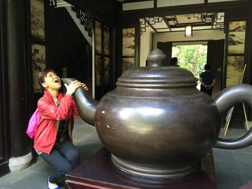
茶壶雕塑

江边

江边

江边漫步

江边

街头
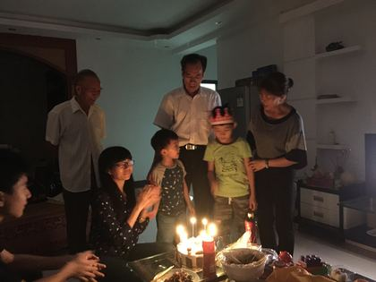
街头

生日

生日聚会
2016

酒店大堂
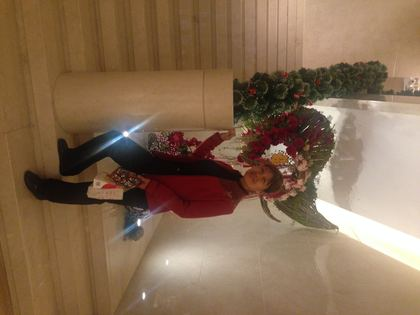
花环

玻璃花瓶
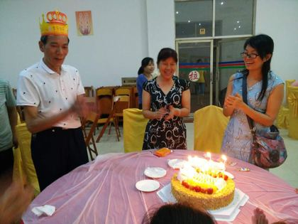
生日宴

草坪野餐
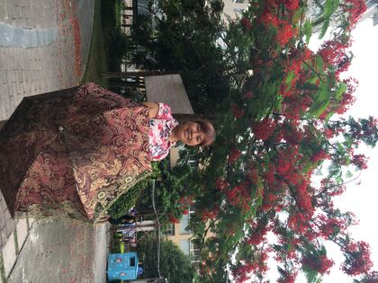
凤凰花

海岸城
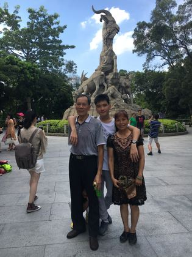
朋友合影
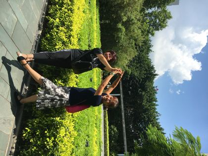
牵手
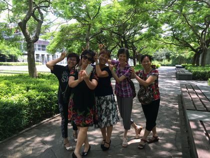
姐妹合影
姐妹自拍
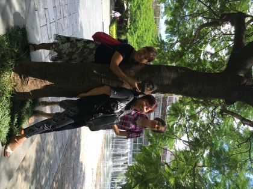
大树下
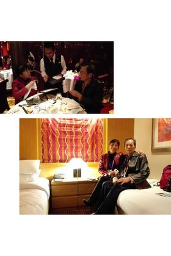
喷泉前
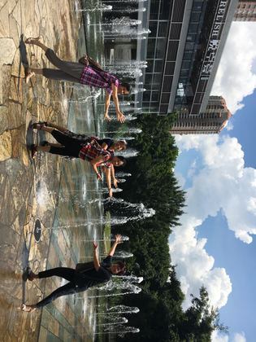
喷泉牵手
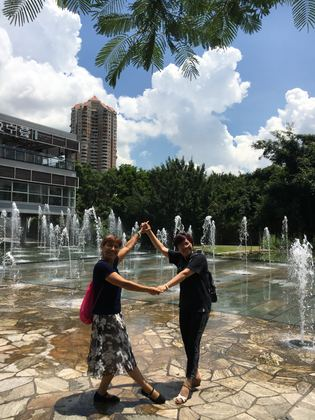
手牵手
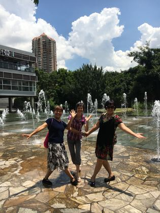
喷泉

喷泉合影

转裙子
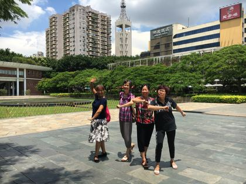
广场合影
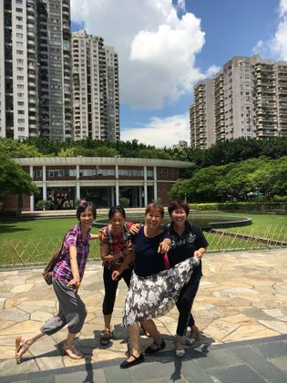
抱成一团
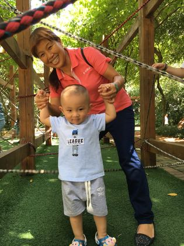
姐妹合影

游乐场

草坪漫步
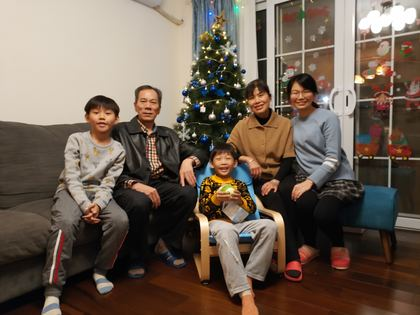
野餐
晚餐
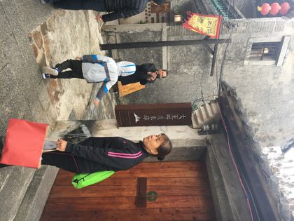
古城
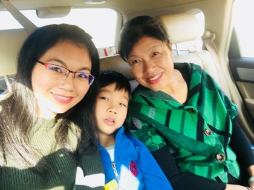
墙绘

古城合影
2017

景区合影
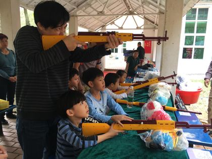
并肩合影
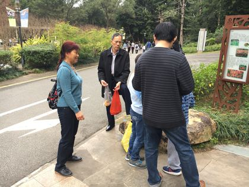
打枪游戏

公园
帆船前

全家福
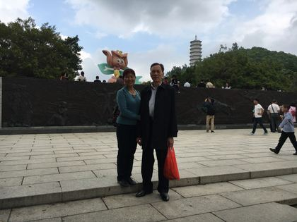
广场

山茶花
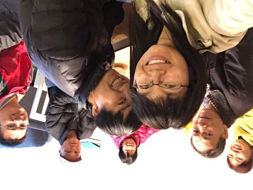
室内合影
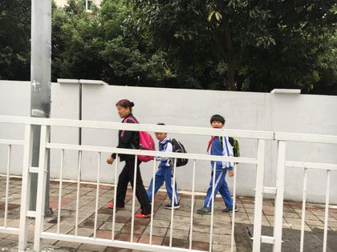
上学路上
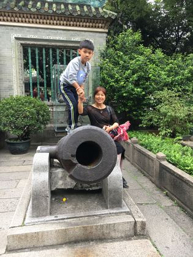
石洞游览
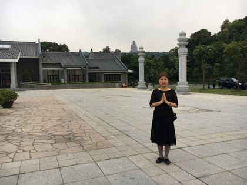
看古炮

禅院祈福
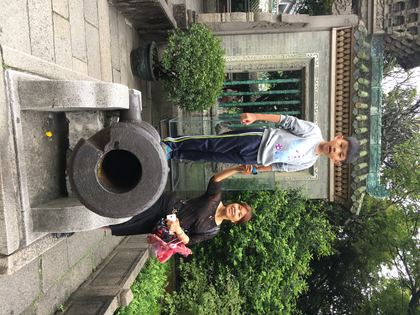
佛山祖庙
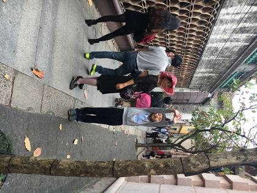
祖庙街
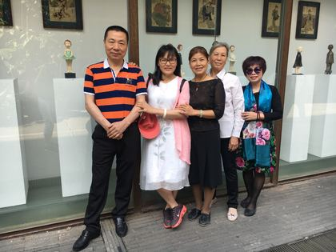
家中

看展合影
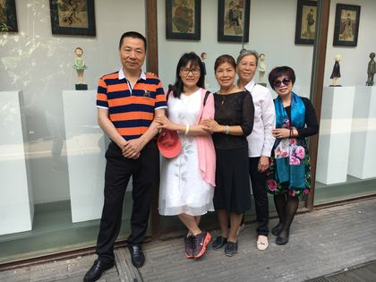
展馆外

展馆合影
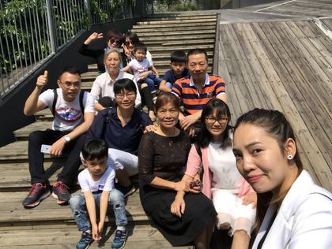
木滑梯
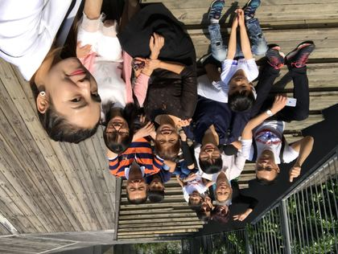
大合影
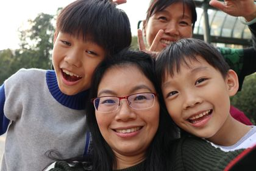
家中
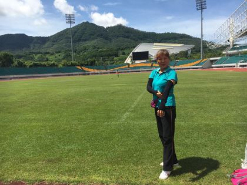
老两口

大运会场馆
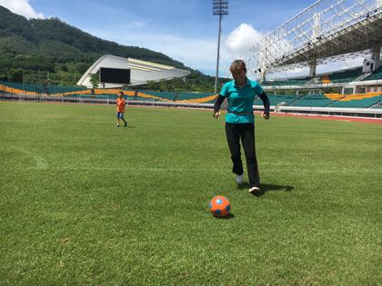
踢球
明华轮
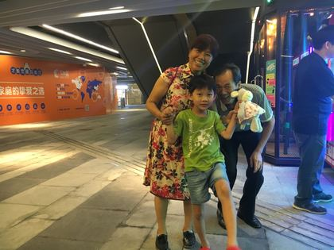
明华轮
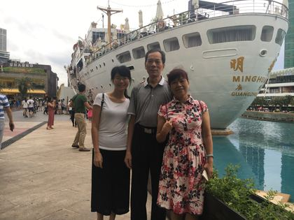
夜游商场

明华轮
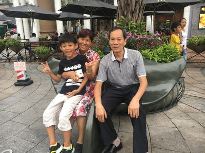
海上世界
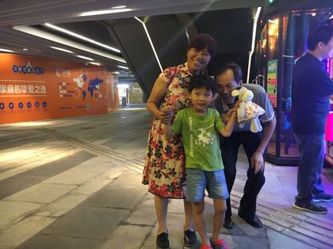
抓娃娃

广州塔

广州塔

越秀公园石椅

越秀公园合影
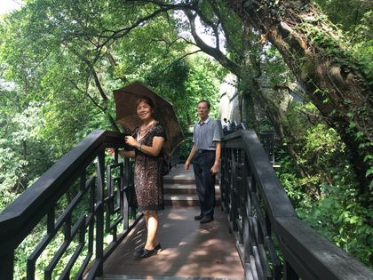
越秀公园纳凉

越秀公园栈道

越秀公园林间合影

越秀公园
流花湖公园
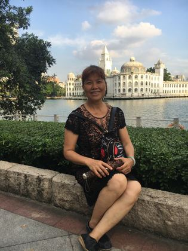
流花湖公园湖畔
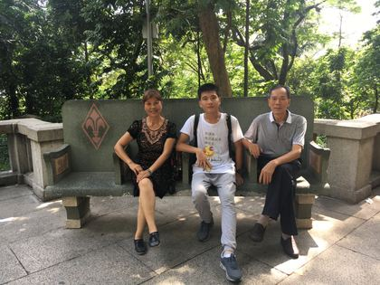
广州塔下
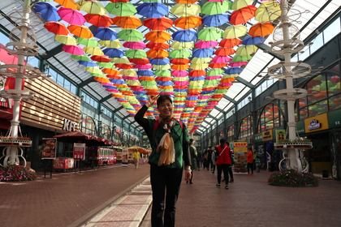
公园长椅
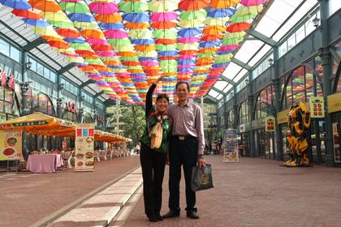
越秀公园
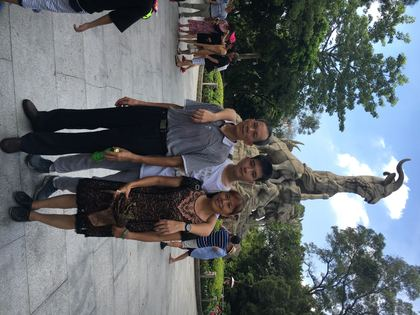
五羊石像

五羊石像
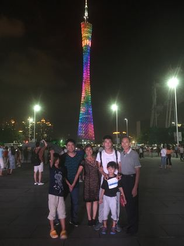
流花湖白宫
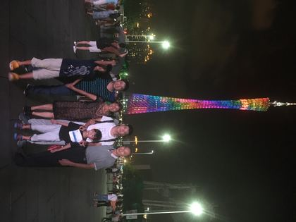
广州塔夜景
邮轮船舱

邮轮合影

邮轮之旅
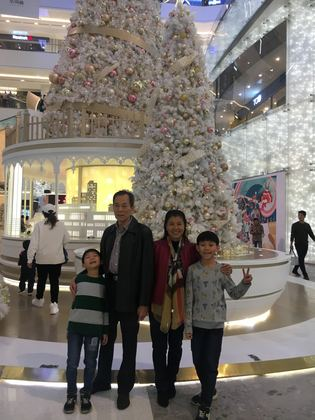
邮轮餐厅
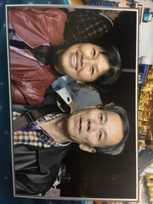
圣诞树

邮轮纪念照

平安夜
平安夜
平安夜

平安夜
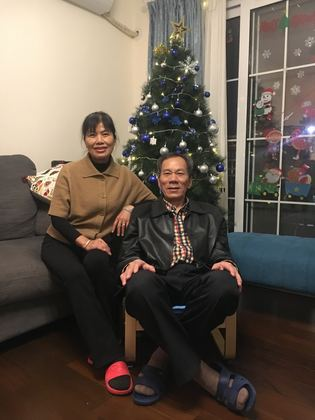
平安夜
冬夜合影

圣诞夜

圣诞夜
圣诞树

车上自拍
彩色小火车

彩伞街

彩伞下合影

灿烂笑容
外公外婆

花下留影

红叶园中
车上自拍

车上自拍
车上自拍
茶溪谷
茶溪谷
茶溪谷花田

茶溪谷花田

茶溪谷
茶溪谷大剧院
茶溪谷花田

茶溪谷

彩虹小火车

彩虹小火车

彩伞街
彩伞街

彩伞街
彩伞街
蝴蝶翅膀

瀑布兰花

红桥
红柱林

红桥

红桥

竹篱
茶园

茶溪谷
湖边

湖边
湖边红花
母女自拍

湖畔红叶

华侨城花车前合影
花车旁的笑脸

临水小憩

湖畔留影
木亭小憩
茶溪谷街头
小楼前的胡桃夹子
祖孙留影
雕塑前合影
雕塑前合影
茶溪谷全家福
与铜人合影

老两口街头合影
缆车上留影
花田留影

花田里的老两口
花田边合影
红花田前

大剧院前合影
大剧院前比耶
大剧院前留影
湖畔木栈道
湖畔黑天鹅
湖畔近影
2018

水乡桥上

水乡合影
2019

自助聚餐

烧烤夜宵
中秋家宴

楼梯间留影

和孙子在楼梯间

餐厅用餐
2021
灶前忙碌
全家团圆饭
百育老家

花田展臂
花田赏花
田埂小坐

花田自拍
花间笑脸
田间小径
花田倩影
指花微笑

花田裹头巾

头巾笑脸

花田拎包

桥头小憩

花田合影
花田相拥
客厅K歌

选歌中
放声高歌
给孙子唱歌

围坐合影

晚霞露营

露营早餐
举杯微笑
露营合影
2022
引吭高歌
2023
高铁站台
酒店品茶

品茶小憩
甜品时间
酒店房间

窗前留影

赏花
古城夜游
火锅晚餐
举杯
火锅自拍
开心吃馒头
郁金香旁

丰盛早餐

远眺群山

草地小坐

民居前留影
树下小憩
湖畔小坐

洱海之滨
洱海自拍

湖畔合影
湖畔漫步
垂柳湖畔
湖畔垂柳
花丛留影

花车合影
拥抱蓝天

木栈道上
樱花树下
花下微笑

湖边小憩

草地小坐

草地小憩

湖畔自拍
湖边戏鸭

推车回眸
花丛小坐
柳下小憩

芦苇荡

芦苇飞舞

芦苇倩影
下午茶自拍

品茶
吃水果

整装待发
山茶花开

古墙青藤
红枫映人

红枫下的外婆
花下倚树
轻抚花枝
拥抱樱花树

拍花

花下人
樱花小径
石墙红叶
拍多肉

花海中的外婆

闻香
天龙八部

晚餐

古城夜色

苍山脚下
林间石阶

亭中休憩
杜鹃花开

多肉花坛
多肉旁

观多肉
小院留影
静心

门前小坐
咖啡时光

咖啡馆自拍
门后探头

花湖倩影
心形花门
花门俏影

多肉园
花径
月亮门

湖畔沉思
黎公馆

湖畔小坐

小巷留影

一线天

洱海之畔

双廊等风来
窗边

喝咖啡
咖啡小憩

远眺

廊下
咖啡馆门口

向日葵旁
圆窗小楼

洱海落日

客房小憩
早餐
游船
雕塑园
白楼金像

牌楼

白族风情
裙摆飞扬
花间白族装

林间小坐
黄花丛中
海天之间

银饰倩影
展裙
广场起舞

柱边倩影
黄花路
湖畔花影

花墙

月下倩影

咖啡馆门口

下午茶
窗边品咖啡
过桥米线

拌米线
南诏风情岛

白桥
坐看白桥
蓝裙湖畔

桥下

桥上

花坛
门洞前
红砖穹顶
穹顶之下

芦苇丛边

池畔小坐
瓶塔群
草地小憩
湖畔

砖墙
泳池边
水边小坐
绿墙石阶
泳池小坐
泳池草亭
白色雕塑

喝茶
晚餐

夜色阳台

湖畔早餐
红衣穹顶
瀑布前

寺院广场
登山门

林间

红花石阶
花下石栏
卤鸡店

老火车

车厢门口

火车头前

湖畔

沙滩坐石

草地礼物

侍弄花草
民族服装

民族装与小熊

花墙民族装
家门前

泡茶
花艺前合影
比心合影

KTV唱歌

众人唱歌
KTV合影
KTV对唱
花架合影
四人自拍

全家自拍
2024
春节 · 老家
春节 · 老家

春节 · 老家

春节 · 老家

春节 · 老家

春节 · 老家
春节 · 老家

车上自拍

今昔对比
团圆举杯
包饺子

福字前

门前合影

赏花
捧花
多肉
门口合影
全家福
葡萄架下

夜话烧烤
油茶小吃
夜游河畔

吃火锅
2025
团圆饭
病房探望

火车自拍

天星码头夜景

维港夜游

维港夜景
钟楼夜景
维港夜
梳头发

多肉植物
家中

夜市吃粉

郊外游玩
郊外游玩

郊外游玩
秋日自拍
秋日郊游
喝汤
2026
做糍粑

和面

门口做糍粑

夜景自拍

包包子
夜市
夜市小吃
夜市漫步
木屋咖啡馆

木屋小坐

咖啡馆
老两口
闺蜜聚餐